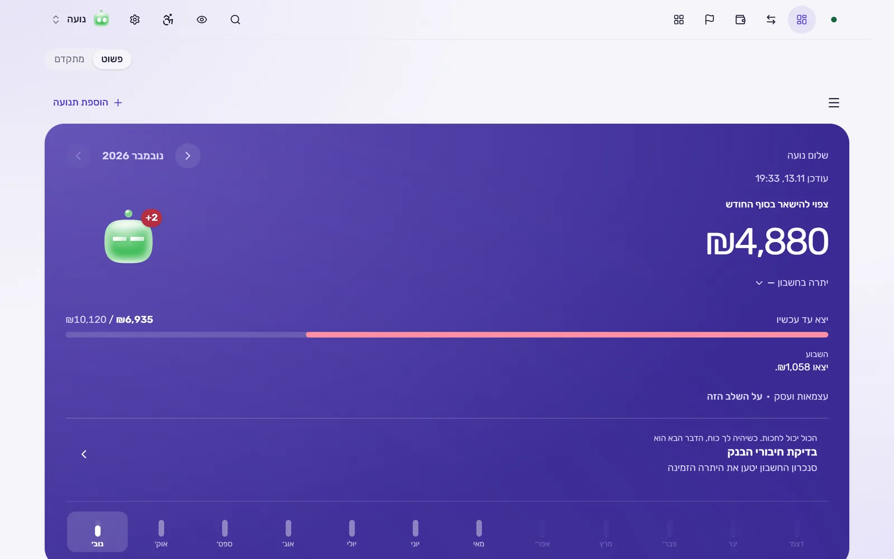
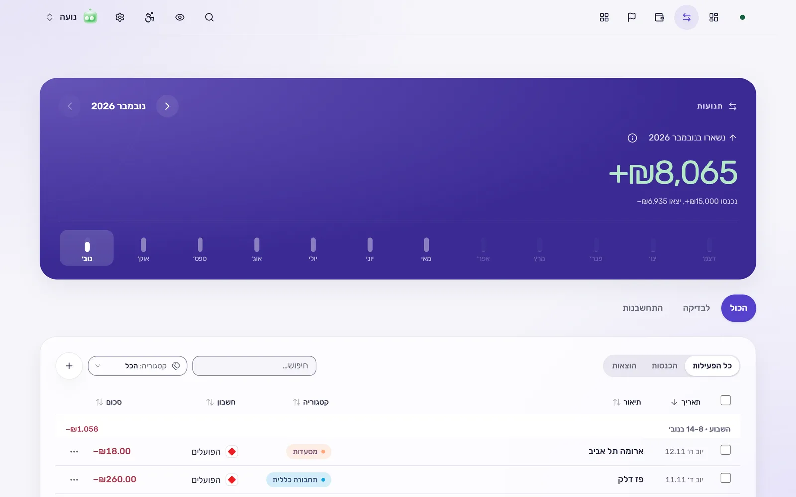
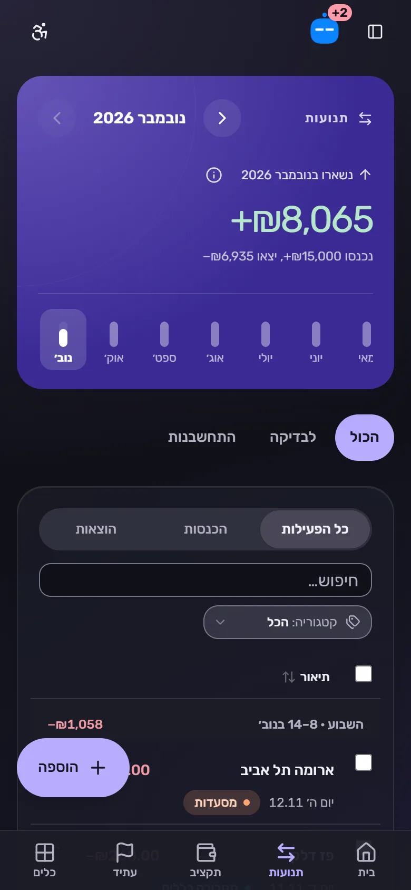

Calm money
for your household.
Your banks, your budget and your future in one place. A budget for every week, tools for every big decision, and your data never leaves home.


One clear number. Everything else when you need it.
Simple mode shows what you'll have left, this month by rows, and every category week by week. Advanced mode opens the full picture.
Every transaction, sorted by week
Transactions from all your banks and cards in one place, in category colours. Adding cash takes a second: type the amount, pick a category, done.
- Search, filters, splits and tags
- Spending in rose, income in green
- An AI of your choice sorts new transactions, or no AI at all

A budget that shows the pace, not just the total
Every category has a weekly budget, what's gone and what's left. A financial-health score gathers every warning behind one button, and the cash-flow forecast shows what's ahead.
- 50/30/20 view
- Recurring and upcoming charges
- Goals, net worth and investments

Family profiles
A "who's using?" screen, one shared household, and everyone keeps their own layout and accessibility choices.
Pip
A small companion whose mood follows the household's money and gently points at what needs care. Everyone picks their own.
Accessible by design
An accessibility menu (Alt+A), a statement aligned with IS 5568 and WCAG 2.2 AA, and a privacy mode that hides amounts.
Ask your money
"How much did I spend on food last month?" in plain words, plus a Telegram bot with instant spending feedback.
The answers that actually matter here.
More than 25 calculators and guided tools, ordered by life stage. Each shows which year its figures are valid for, and the code cites the source.
Your data doesn't leave home.
Penny runs on your computer and listens only on the local address. Bank credentials are encrypted, and your data sits in one file you can back up. Nothing goes out except to your bank, and to an AI provider if you chose one.
- AES-256-GCM encryption for credentials
- Automatic backup before any change to the data structure
- App lock, and phone access only when you turn it on, with a code

Three ways to start.
The first time, a short onboarding walks you through it: profile and Pip, connect a bank or import a file, a monthly target and budgets.
Windows
Download Penny Setup.exe and run it. No terminal, no Node.js. To update, run the new installer.
DownloadDocker
Everything in an isolated container, with updates that roll back automatically if something's wrong.
docker compose up -d --build
From source
Installs an always-on service and a menu bar app on macOS and Windows.
git clone https://github.com/Sergey-Bar/Penny.git cd Penny && npm install npm run setup
A personal tool for your own accounts only. Automated access to banks may violate their terms of service. Calculators give estimates, not advice.